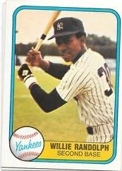

Willie Randolph "Mickey"
Career Highlights & Facts
(Facts are AI-generated and may require verification)
- Set a record for most assists by a second baseman in a 9-inning All-Star Game.
- Never committed an error in a postseason game throughout an 18-year career.
- Won the James P. Dawson Award for being the best rookie at the end of spring training.
Would you like to find out more about Willie Randolph?
Willie Larry Randolph, the son of South Carolina sharecroppers and the great-grandson of slaves, parlayed his nimble hands, patience at the plate, and excellent hitting into an 18-year career as a second baseman in the major leagues. In Baseball-Reference.com’s EloRater, an ongoing project to quantify the statistics of batters and pitchers, Randolph ranked 158th of 1,851 batters rated as of 2013. His career fielding percentage is .979, and he was selected for six All-Star teams. But in a field of second basemen that included
Frank White
of the Royals and
Lou Whitaker
of the Tigers, Randolph never won a Gold Glove award. After retiring as a player, he continued to work in baseball as a coach and manager, most notably as the manager of the New York Mets from 2005 until 2008.
Willie Randolph was born on July 6, 1954, at Holly Hill in the Lowcountry of South Carolina. His great-grandmother, Nellie, was a slave until she was 19. She worked as a sharecropper, as did Willie’s parents, Randy and Minnie Randolph. In the fall of 1954 the Randolphs followed other relatives who had moved to the Brownsville section of Brooklyn. Randy Randolph got a job in construction, and as they added four more children to their family, he began to drive a taxi on nights and weekends.
Brownsville was being transformed at this time from an integrated, working-class neighborhood to a ghetto populated mostly by African-Americans and Puerto Ricans. It soon had the largest concentration of public housing in the whole city, and was rife with gangs and drugs. Randolph himself grew up in the Tilden Housing Projects on Dumont Avenue. As he told Michael Geffner, it was baseball that kept him out of trouble in this dangerous environment: “I was totally zeroed in. … I was so focused on wanting to play major-league baseball that I had this mentality, this military mentality, even at a very early age.” He played stickball in the streets, softball in the schoolyards, and hardball at Betsy Head Park, which was littered with broken glass, rocks, and craters. Randolph told Geffner: “You want to know where I got my fast hands from? … That field made a man out of you. If you weren’t fast, those bad hops got you but good.” Willie credited Little League coach Galileo Gonzalez for teaching him the game. And he said that growing up in Brownsville actually provided him with many of the skills he needed later: “No matter where I go or what I do, whether it’s playing, coaching or managing … Brownsville is always there inside me. It gave me my biggest strength, my street smarts, my instincts. To know how to deal with everything that’s thrown at me. To know what makes people tick. When you grow up in a hard environment like the ghetto, you better have strong, solid instincts … or else you get eaten up alive.”
His mother, Minnie, also contributed to his success with her constant advice: “Anything you do, everything you do, make sure you do your best.”
Randolph attended Samuel J. Tilden High School in Brooklyn, where he was a star athlete. Here he maintained his “military mentality.” His high-school coach, Herb Abramovitz, told T.J. Quinn of the
New York Daily News
that Willie would ask to stay after practice to work longer. According to Abramovitz, “I’d lay a mat on the floor of the gym and he practiced how to dive for a ball. … Did you ever hear of a player practicing diving for a ball? We practiced that for hours.” Randolph’s favorite player during this period was second baseman
Ken Boswell
of the 1969 Mets. Later, when he was playing for the Mets, Randolph wore number 12 in Boswell’s honor.
After he finished high school, Randolph was drafted by the world champion Pittsburgh Pirates in the seventh round of the June 6, 1972, free-agent draft. He started out with the Class A Gulf Coast League Pirates in 1972, appearing in 44 games and batting .317. The following year he was with the Charleston Pirates of the Class A Western Carolinas League, where he batted .280. By 1974 he was with the Thetford Mines (Quebec) Pirates of the Double-A Eastern League. He finished that season with a batting average of .254, an on-base percentage of .397, and a fielding percentage of .966. He played his final minor-league baseball in 1975, with the Charleston (West Virginia) Charlies of the Triple-A International League, batting .339 with a fielding percentage of .965. He was called up by the Pirates in July of that year, and made his major-league debut on July 29 at the age of 21. He appeared in 30 games for the Pirates in 1975, batting only .164 but posting an on-base percentage of .246. He played in two games against Cincinnati during the National League Championship Series, going hitless. Cincinnati won that series.
On December 11, 1975, the Pirates traded Randolph and pitchers
Ken Brett
and
Dock Ellis
to the New York Yankees for pitcher
Doc Medich
. Randolph was the Yankees’ starting second baseman in 1976, appearing in 125 games. He had a batting average of .267, drew 58 walks, and had an on-base percentage of .355. He would remain the Yankees’ starting second baseman through 13 seasons, until 1988.
During those years with the Yankees, Randolph was a consistent batter, especially with runners on base, a patient hitter who drew a lot of walks, and an excellent fielder. In 1976 his batting average was .267, his slugging percentage .328, his on-base percentage .356, and he had 37 stolen bases. He did not hit well during the ALCS or the World Series that year, but he was named to the American League All-Star Team and the Topps All-Star Rookie Team, and won the Yankees’ James P. Dawson Award, which is given to the best rookie at the end of spring training. In 1977 Randolph’s numbers improved, and he posted a batting average of .274, an on-base percentage of .347, and a slugging percentage of .387. He was once again named to the American League All-Star team, and set an All-Star Game record for most assists (six) by a second baseman in a nine-inning game. During the ALCS against the Kansas City Royals, he had five hits and 2 RBIs in 18 at-bats. In the World Series he had four hits and scored five runs as the Yankees defeated the Los Angeles Dodgers.
Randolph continued to play well in 1978, getting 139 hits and 36 stolen bases in 134 games. His batting average was .279, his on-base percentage .381, and his slugging percentage .357. In 1979 he appeared in a career-high number of games (153), and had 682 plate appearances and 574 at-bats, both career highs. He had 155 hits and had a career-high fielding percentage of .985. He was first in the American League in putouts at second base (355), assists (478), and double plays by a second baseman (128). In 1980, Randolph’s batting average was .294, his on-base percentage .427 (second in the American League), and his slugging percentage .407. He led the American League in bases on balls with 119. He scored 99 runs, the most in his career. In the ALCS against Kansas City, Randolph batted .385. He was named to the American League All-Star team and won the Silver Slugger award among second basemen.
Randolph appeared in 93 games for the Yankees in the strike-shortened 1981 season. He batted only .232 for the season, but his on-base percentage (.336) and his slugging percentage (.305) remained high. He was once again named to the American League All-Star team. He batted only .200 during the division series, but raised that to .333 in the ALCS against Oakland. Although the Yankees lost the World Series to the Dodgers in six games, Randolph drew a record nine bases on balls during the Series.
Between 1982 and 1984 Randolph was a consistent player, with a batting average between .279 and .287, an on-base percentage between .361 and .377, and a slugging percentage between .348 and .349. In 1984 he had a career-high 162 hits, and led the league in double plays by a second baseman (112). His numbers remained in the same range in 1985, when he tied his career-high fielding percentage of .985. In a game against the Oakland A’s on September 5, 1985, Randolph had four hits, including two home runs, in four at-bats. In 1986 he had a batting average of .276, an on-base percentage of .393, and a slugging percentage of .346. He did, however, lead the league with a career-high 20 errors.
On November 12, 1986, Randolph became a free agent, and the following January he re-signed with the Yankees. In 1987 he had his best year as a Yankee, driving in a career-high 67 runs, scoring 96, and sporting a batting average of .305. His slugging percentage was the highest of his career, .414. He was once again named to the All-Star team. He played his last year with the Yankees in 1988, appearing in 110 games with a batting average of .230. His on-base and slugging percentages remained high, however, standing at .322 and .300 respectively.
Randolph became a free agent again after the 1988 season. At end of his career with the Yankees, he ranked among the team’s all-time leaders in games played (1,694), runs (1,027), hits (1,731) and stolen bases (251). He was also valuable to the team in other ways. According to T.J. Quinn, although Randolph was very quiet, he was a major key to motivating the team. According to former catcher
Fran Healy
, “You could see there was more there, though. This was when all sorts of crazy stuff was going on there – with
Reggie Jackson
, with
Thurman Munson
. But Willie, with all the turmoil in those years, he was the professional.”
On December 10, 1988, Randolph signed with the Los Angeles Dodgers. He batted .282 for the Dodgers in 1989, with an on-base percentage of .366 and a slugging percentage of .326. He was named to the National League All-Star team. In 1990 he appeared in 26 games for the Dodgers before being traded to the Oakland A’s for outfielder
Stan Javier
on May 13. During his short stint with the Dodgers that year his batting average was .271, his on-base percentage .364, and his slugging percentage .344. He appeared in 93 games for the A’s, batting .257 with an on-base percentage of .331 and a slugging percentage of .318. During the four games of the ALCS against the Boston Red Sox, Randolph had four hits and a walk in 15 at-bats.
On November 5, 1990, Randolph again became a free agent, and on February 18, 1991, the Milwaukee Brewers invited him to spring training as a nonroster player. The Brewers added him to their roster on April 2. At the age of 36, he was to have the best season of his career. In 124 games he batted a career-high .327, drove in 54 runs and drew 75 walks. He was second in the American League in on-base percentage (.424) and third in batting (.327), and batted .374 with runners in scoring position. He did tie his previous career high 20 errors during the season, leading the league.
Despite this performance, by October 31, 1991, Randolph was once again a free agent. On December 20 he signed with the Mets, his boyhood team. By this time he was 37, the eighth oldest player in the National League. He appeared in 90 games for the Mets in 1992, batting .252 with an on-base percentage of .352 and a slugging percentage of .318. His final game as a player was on October 4, 1992; by October 30 he was once again a free agent. During his 18-year career with six different teams, he appeared in 2,202 games and had 2,210 hits (including 316 doubles and 54 home runs), with 687 RBIs, 1239 runs scored, and 271 stolen bases. His batting average was .276, his slugging percentage .351, and his on-base percentage .373. His fielding percentage was .979. Randolph never committed an error in a postseason game. Three times during his career with the Yankees he had four hits in four at-bats, and twice he drove in five runs in five at-bats. Once with the Yankees and once with the Dodgers, he had three doubles in four at-bats.
In 1993 Randolph was back with the Yankees, as assistant general manager. From 1994 through 2003 he was the Yankees’ third-base coach, and in 2004 he became the bench coach under manager
Joe Torre
. The Yankees qualified for the playoffs every year between 1995 and 2004, and won the World Series in four of those years, 1996, 1998, 1999, and 2000. All during this long coaching stint with the Yankees, Randolph was hoping to become a manager. He had numerous interviews, and in 2000 it was rumored that he had been offered the job with the Cincinnati Reds but that negotiations had broken down over salary issues.
In 2001 Randolph told William C. Rhoden of the
New York Times
that he needed to be more aggressive: “They [the network of baseball decision-makers] know of me, they don’t really know me. … In this business you have to get into the mix. I needed to be exposed to people, to let them know me.” Although he admitted that he wanted to be a manager, he also expressed a desire to teach: “I have a great respect for the game. … Not the mushy sentimental way. I try to pass it on. I enjoy teaching. I’d love to manage, but if that doesn’t happen, I’d love to teach, to help players get to the next level as players and as human beings. That’s my reward.”
In November 2004 Randolph got his wish when he was named the Mets’ manager. As he told
Jet
magazine, “I think my wife had to pull me off the ceiling, I was so excited. … It’s a lot of emotion running through your body, the fact that you finally get your opportunity, you’re doing it in your hometown, for the team you rooted for as a kid.”
He managed the Mets from 2005 until 2008. In his first season the team had an 83-79 record, the first season since 2001 that they finished above .500, and tied for third place in the National League East. In 2006 their record was 97-65, tied with the Yankees for the best in the majors. They swept the Dodgers in the Division Championship series, their first division championship since 1988. They lost to the St. Louis Cardinals, however, in the seventh game of the NLCS. Randolph came in second to Florida Marlins manager
Joe Girardi
in the voting for NL Manager of the Year.
In 2007, after Randolph had signed a three-year contract extension, the Mets had a record of 88-74, and had a seven-game lead in the NL East with 17 games to play. But they lost seven of their last 12 games and lost the division title to the Philadelphia Phillies. The Mets got off to a disappointing start in 2008, playing inconsistently into mid-June. Their record, however, was just under .500 at 34-35. On June 17, Randolph, pitching coach
Rick Peterson
, and first-base coach
Tom Nieto
were fired, and Randolph was replaced by interim manager
Jerry Manuel
. Randolph, who had felt his job was secure, was stunned. As he told reporters,
“I felt all along this team would play better and we would eventually get into the season and do really well. … In my mind, this all happened way, way too early.”
Ironically, Randolph’s Mets teams rank second only to
Davey Johnson
’s for all-time winning percentage. Under Randolph, the Mets’ record was 302-253, for a winning percentage of .554. Johnson’s winning percentage was .588.
Randolph was the bench coach for the Milwaukee Brewers during 2009 and 2010. In 2011 he was the bench coach and later the third-base coach for the Baltimore Orioles. He was the third-base coach for Team USA in the 2013 World Baseball Classic.
Randolph and his wife, Gretchen, were the parents of four children, Taniesha, Chantre, Andre, and Ciara. As of 2013 they lived in Franklin Lakes, New Jersey, where Randolph enjoyed cooking, fishing, golf, and jazz. In 2008 the couple established the Willie Randolph Foundation to support baseball in the inner city.
Baseball-Reference.com
Retrosheet.org
The Willie Randolph Foundation
http://willierandolphfoundation.org/about_willie.asp
Accessed April 4, 2013
“Willie Randolph.” Available online at
http://www.mlb.com/team/coach_staff_bio.jsp?c_id=nym&coachorstaffid=120927
Wayne Coffey, “Rising Son,”
New York Daily News,
October 1, 2006. Available online at
http:
.
Michael Geffner, “Willie Randolph: A Quiet Man Revealed.”
Times Herald Record
, September 30, 2006. Available online at http://ewxoesonline.com/apps/pbcs/dll/article?AID=/20060930. Accessed April 4, 2013.
Coffey, “Rising Son.”
T.J. Quinn, “Managing in Brooklyn: Willie’s Ascent Brings It Home in Old Borough,”
New York Daily News
, November 5, 2004. Available online at
http:
. Accessed October 16, 2013.
Quinn.
William C, Rhoden, “Sports of the Times: Baseball Lifer has a Quest to Fulfill.”
New York Times
, July 7, 2001, D1. Available online at http://nytimes.com/2001/07/07/sports/sports-of-the-times. Accessed April 4, 2013.
“Longtime Yankees Coach Willie Randolph Named New York Mets Manager,”
Jet
, November 22, 2004, 51.
“Randolph: Move Was ‘Too Early,’ ”
New York Times
, June 19, 2008. Available online at
http://nytimes.com/2008/06/19/sports/baseball/19willie.html
. Accessed October 16, 2013.
Full Name
Willie Larry Randolph
Born
July 6, 1954 at Holly Hill, SC (USA)
Stats
Baseball Reference
Retrosheet
Managers
Career Totals
| WAR | AB | H | HR | BA | R | RBI | SB | OBP | SLG | OPS | OPS+ |
|---|---|---|---|---|---|---|---|---|---|---|---|
| 66.0 | 8018 | 2210 | 54 | .276 | 1239 | 687 | 271 | .373 | .351 | .724 | 104 |
Statistics via Baseball-Reference.com
The Original Clue